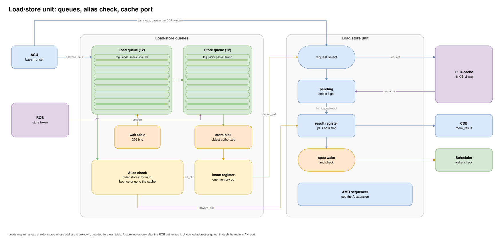

Stage 6: Execute¶
Execute has six functional unit slots. It runs instructions, checks branches and detects address and access faults for the ROB.


Slot |
Unit |
Latency |
|---|---|---|
0, 1 |
ALU |
1 cycle |
2 |
LSU |
cache dependent |
3 |
AGU |
1 cycle, results go to the load/store queues |
4 |
MDU |
4 for multiply, iterative for divide |
5 |
CSR |
1 cycle |
The RTL is in rtl/cpu/6-execute/. execute.sv maps the slots and holds no state.
Ready and Hold¶
Each unit has an input register, the operation, and an output register that holds the result until the result bus grants it.
fu_packet ──> [input reg] ──> combinational op ──> [output reg] ──> fu_result
adv_out_reg = ~result_q.is_valid || cdb_gnt;
adv_inp_reg = ~packet_q.is_valid || adv_out_reg;
fu_rdy = adv_inp_reg;
An ungranted result stays in the unit and backpressure reaches issue. Every unit can wait, so the result bus arbiter uses plain round-robin.
Design Decision: No Selective Kill¶
Execute has no selective kill. An execute redirect reaches only the front end, so wrong-path instructions inside a unit finish normally. Only wrong-path work can depend on their results, and the back-end flush at branch retirement clears every unit.
ALU¶
RV32I with an operand register and a result hold register. With the hold slot empty a result leaves directly; an ungranted result moves to the hold slot. The current and held results feed register read as forward ports regardless of the bus grant, and the ALU announces its destination one cycle early so a dependent op can follow immediately.
src_0 computes pc + imm and src_1 carries rs1 and rs2. The taken bit occupies bit 0 of the target, which is free because targets are 2-byte aligned, so one result word holds the branch resolution.
FNC_BEQ: result = {result[31:1], rs1 == rs2};
branch_resolve = '{val, rob_tag, ftq_id, pc, targ, taken};
A taken transfer to a target with bit 1 set raises an instruction-misaligned fault and redirects nothing. For jumps the ALU places pc+4 on the bus as the link value while the target drives the redirect, both from the same registered operand. FENCE and FENCE.I pass through; commit handles their ordering.
AGU¶
The AGU adds base and offset, checks alignment, and returns the address with the store data to the load/store queues without using a result bus.
A second adder computes the same address for the queue compares, because the main sum fans out to every queue entry. A
dont_touchmodule keeps synthesis from merging the two.The uncached test (DMA region or device) uses bits 31 to 14, since those regions start on 16 KiB boundaries. The AGU computes both upper sums, with and without a carry from the low 14 bits, and the low carry selects one. The flag resolves a few carry stages before the full address.
A misaligned address raises the load or store misaligned fault and never reaches memory. LR.W faults as a load; SC.W and the AMOs fault as stores.
LSU¶
The LSU connects the queues to the D-cache and aligns byte lanes. It tracks one outstanding transaction; a new request can leave as the previous response arrives. A flush toggles an epoch bit, and responses for killed requests drain without effect.
Design Decision: Registered Load Results¶
Every load result passes through the LSU result register before the bus, which keeps the cache hit decision out of bus arbitration and wakeup. That register adds one cycle of load-to-use latency, and speculative wakeup recovers it for ALU consumers:
A load announces its destination one cycle after the cache accepts it.
Consumers select in the expected data cycle and read the result register.
A check follows and fails unless the word reached the result register in time; a miss, a full register or a forward fails it.
On failure the scheduler replays (issue).
The queue can send a load directly from the AGU and check older stores one cycle later (issue). A failed check raises a late cancel that kills the request and drops its response.
An uncached store’s write response goes to the ROB, so an AXI write error becomes a precise fault. A cacheable store has retired before reaching the LSU, so its response is consumed silently.
Atomics start a read, compute, write sequencer that owns the cache port until it finishes. The ROB holds traps and interrupts until the atomic retires, so no flush reaches it (A extension).
MDU¶
A four-cycle pipelined multiplier and a radix-4 divider with one divide in flight (M extension).
CSR¶
The CSR unit reads the CSR bank and computes the write value.
|
Operation |
Writes |
|---|---|---|
|
|
always |
|
|
when source != 0 |
|
|
when source != 0 |
The old value goes on the bus and the new value waits in the ROB until commit. CSR ops issue only at the ROB head, so this path is non-speculative. System instructions pass through with no CSR write to complete their ROB entry.
Exceptions¶
Source |
Cause |
|---|---|
ALU |
instruction address misaligned |
AGU |
load or store address misaligned |
LSU |
load or store access fault |
All feed the ROB’s oldest-exception tracker, and commit decides when to trap.
Limits¶
Two ALUs, so two simple ops start per cycle.
One memory port shared by loads and stores.
The divider is not pipelined.
No floating point; atomics run one at a time at the ROB head.